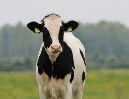
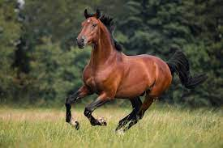

DOG
Teacup dogs are extremely popular pets because these micro dogs look like puppies forever. It's no wonder they can fetch thousands of dollars apiece. In general, teacups are markedly smaller than their breed standard and are not recognized
by the American Kennel Club.

CAT
Cats, also called domestic cats, are small, carnivorous mammals, of the family Felidae. Domestic cats are often called 'house cats' when kept as indoor pets.Cats have been domesticated for nearly 10,000 years. They are one of the most popular
pets in the world. They are kept by humans for hunting rodents and as companions.

COW
Domestic cows are one of the most common farm animals around the world, and the English language has several words to describe these animals at various ages. A baby cow is called a calf. A female calf is sometimes called a heifer calf and
a male a bull calf

HORSE
Horse (Equus caballus), a hoofed herbivorous mammal of the family Equidae. It comprises a single species, Equus caballus, whose numerous varieties are called breeds. Before the advent of mechanized vehicles, the horse was widely used as a
draft animal, and riding on horseback was one of the chief means of transportation.

SHEEP
Sheep, (Ovis aries), species of domesticated ruminant (cud-chewing) mammal, raised for its meat, milk, and wool. The sheep is usually stockier than its relative the goat (genus Capra); its horns, when present, are more divergent,it has scent
glands in its face and hind feet; and the males lack the beards of goats.
CHICKEN
Chicken, (Gallus gallus), any of more than 60 breeds of medium-sized poultry that are primarily descended from the wild red jungle fowl (Gallus gallus, family Phasianidae, order Galliformes) of India. The chicken is perhaps the most widely
domesticated fowl, raised worldwide for its meat and eggs.
RABBIT
Rabbit, any of 29 species of long-eared mammals belonging to the family Leporidae, excluding hares (genus Lepus).Frequently the terms rabbit and hare are used interchangeably, a practice that can cause confusion. Jackrabbits, for instance,
are actually hares, whereas the rockhares and the hispid hare are rabbits. Rabbits differ from hares in size, life history, and preferred habitat. In general, rabbits are smaller and have shorter ears than hares. They are born without
fur and with closed eyes after a gestation period of 30–31 days.
DONKEY
Donkey, (Equus asinus), also called burro, domestic ass belonging to the horse family, Equidae, and descended from the African wild ass (Equus africanus). It is known to have been used as a beast of burden since 4000 BCE.Donkeys are versatile
animals and can have many uses including for children to ride, for driving and showing, light draught work, a companion animal or simply as pets.
GOAT
Goat, any ruminant and hollow-horned mammal belonging to the genus Capra. Related to the sheep, the goat is lighter of build, has horns that arch backward, a short tail, and straighter hair. Male goats, called bucks or billys, usually have a beard. Females
are called does or nannys, and immature goats are called kids. Wild goats include the ibex and markhor.
FISH
Fish, any of approximately 34,000 species of vertebrate animals (phylum Chordata) found in the fresh and salt waters of the world. Living species range from the primitive jawless lampreys and hagfishes through the cartilaginous sharks, skates,
and rays to the abundant and diverse bony fishes. Most fish species are cold-blooded; however, one species, the opah (Lampris guttatus), is warm-blooded.
TORTOISE
Tortoise, (family Testudinidae), any member of the turtle family Testudinidae. Formerly, the term tortoise was used to refer to any terrestrial turtle. The testudinids are easily recognized because all share a unique hind-limb anatomy made
up of elephantine (or cylindrical) hind limbs and hind feet; each digit in their forefeet and hind feet contains two or fewer phalanges. With the exception of the pancake tortoise (Malacochersus tornieri), the shell is high domed.
PARROT
Parrot, term applied to a large group of gaudy, raucous birds of the family Psittacidae. Parrot also is used in reference to any member of a larger bird group, order Psittaciformes, which includes cockatoos (family Cacatuidae) as well. Parrots
have been kept as cage birds since ancient times, and they have always been popular because they are amusing, intelligent, and often affectionate.
JAIPUR PET SHOP
This is Jaipur Pet shop, We provide all kinds of pets you need with their food and needed equipments. We have various breeds of all pets and they are 100% original.
Contact us:
Location : 386, Gandhi Marg, Kalwar Road, Jhotwara, Jaipur, Rajasthan, India
Contact us: Ph.8565478552 ,0141-452145
Email : jaipurpetshop@gmail.com